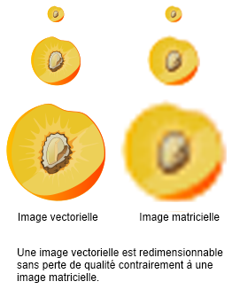
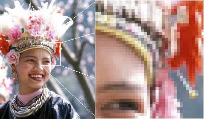

En informatique une image peut être VECTORIELLE ou MATRICIELLE.
 |
Image Vectorielle Une image vectorielle (ou image en mode trait), est une image numérique composée d'objets géométriques individuels (segments de droite, polygones, arcs de cercle, etc.) définis chacun par divers attributs de forme, de position, de couleur, etc. l'image vectorielle est dessiné à nouveau à chaque visualisation, ce qui engendre des calculs sur la machine. L'intérêt est de pouvoir redimensionner l'image à volonté sans aucun effet d'escalier. L'inconvénient est que pour atteindre une qualité photo-réaliste, il faut pouvoir disposer d'une puissance de calcul importante et de beaucoup de mémoire. Le format vectorielle permet également la superposition de plusieurs couches. En cartographie cela permet par exemple de superposer plusieurs informations comme les fleuves, les routes, le relief. Les écritures peuvent être réduites et toujours lisibles avec précision. Cette représentation implique un nombre limité d'objets graphiques. D'autre part, ces fichiers graphiques sont très légers. À chaque zoom, le tracé reste précis car l'ordinateur recalcule les coordonnées en fonction de l'échelle demandée.Le dessin vectoriel offre une possibilité de « zoom infini ». Il existe de nombreux formats de fichiers vectoriels. On peut citer Postscript, PDF, Adobe Flash, Illustrator ou le SVG. Le célèbre logiciel des architectes Autocad a imposé ses formats de fichier DXF et DWG . |
 Jialiang Gao www.peace-on-earth.org |
Image Matricielle Une image matricielle ou image en mode point est une image numérique dans un format de données qui se compose d'un tableau de pixels ou de points de couleur, généralement rectangulaire, qui peut se visualiser sur un moniteur d'ordinateur ou tout autre dispositif d'affichage RVB. La qualité d'une image matricielle est déterminée par le nombre total de pixels ("picture element") et la quantité d’information contenue dans chaque pixel (souvent appelée profondeur de numérisation des couleurs). Plus il y aura de pixels, plus il y aura de détails fins visibles. On dit que plus une image a de pixels, plus elle est de grande qualité. Une image numérisée avec une définition de 640×480 pixels (donc contenant 307 200 pixels) apparaîtra très approximative et sous forme d’un pavage de petits carrés de couleur, par comparaison à une image numérisée à 1280×1024 (1 310 720 pixels). Puisqu'il coûte une grande quantité de données pour stocker une image de très grande qualité, des techniques de compression de données sont souvent employées pour réduire la taille des images stockées sur un disque. Certaines de ces techniques perdent des informations, et ainsi appauvrissent la qualité de l’image, afin de réaliser un fichier occupant beaucoup moins de place sur disque. Les couleurs de l'image peuvent être soit codées suivant une palette, c’est-à-dire que les informations de couleur de chaque pixel indiquent le rang d'une couleur dans une liste prédéterminée. Le format GIF est un format d'image utilisant une palette. On peut également faire correspondre directement une couleur en codant un triplet de couleurs rouge, vert et bleu dans les informations associées à un pixel, dont le nombre de bits utilisé indiquera le nombre maximum de couleurs possibles. Par exemple 16 millions de couleurs pour un affichage standard sur 24 bits dont 8 pour chaque composante de l'espace de couleur RVB ou 2 seulement pour un affichage monochrome avec un seul bit par pixel. Les principaux formats matriciels sont BMP, GIF, TIFF, PNG et JPEG. Lorsque l'on grossit une image matricielle, puisqu'on ne rajoute aucune information qui ne serait pas déjà présente, cela induit une perte de qualité visible. Une image numérique agrandie est dite pixelisée. |